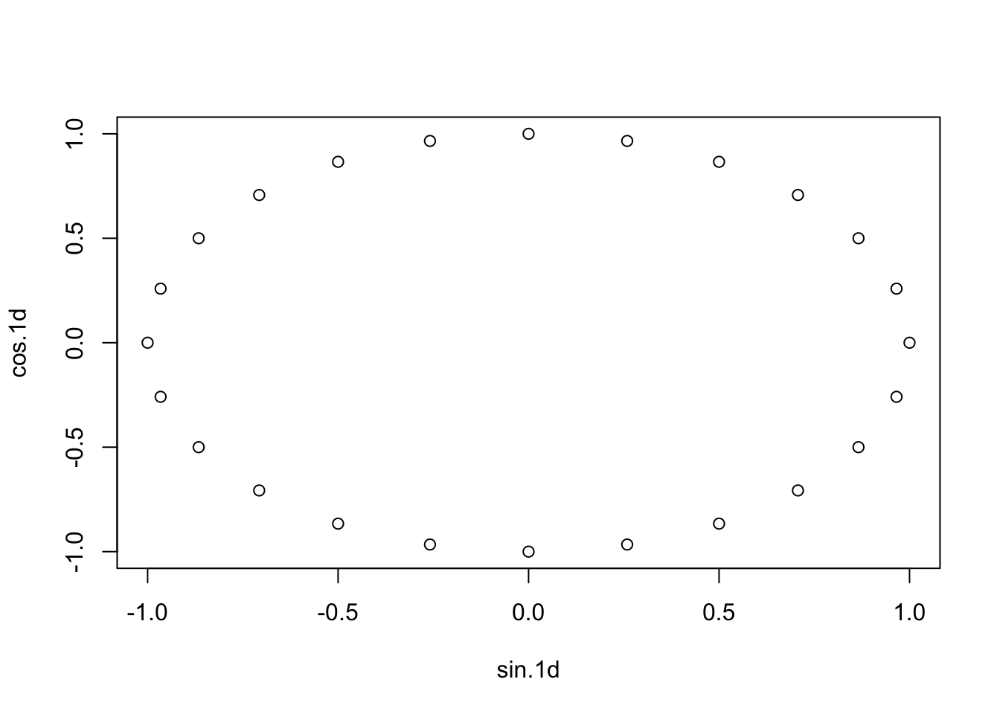
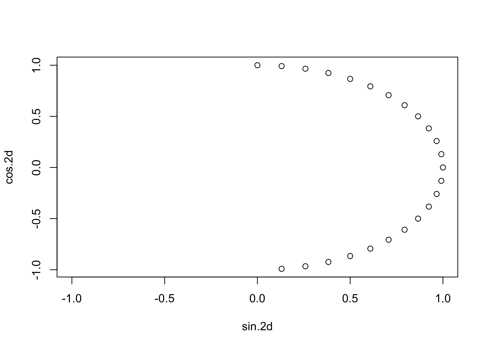
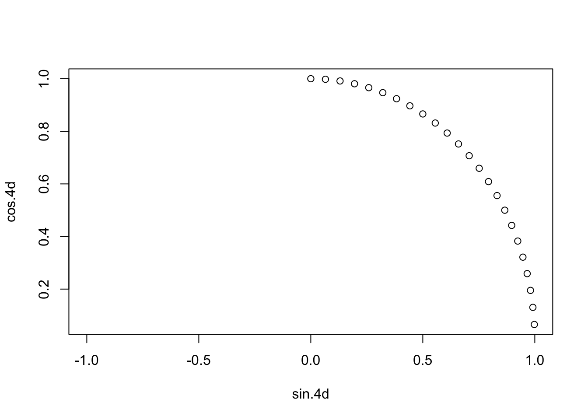

#test code output ---cyclical_encoding
#https://rdrr.io/cran/lubridate/man/cyclic_encoding.html
library(lubridate)Loading required package: timechange
Attaching package: 'lubridate'The following objects are masked from 'package:base':
date, intersect, setdiff, uniontimes <- ymd_hms("2019-01-01 00:00:00") + hours(0:23)
cyclic_encoding(times, c("day", "week", "month")) sin.day cos.day sin.week cos.week sin.month cos.month
[1,] 0.000000e+00 1.000000e+00 0.9749279 -0.2225209 0.000000000 1.0000000
[2,] 2.588190e-01 9.659258e-01 0.9659258 -0.2588190 0.008445041 0.9999643
[3,] 5.000000e-01 8.660254e-01 0.9555728 -0.2947552 0.016889480 0.9998574
[4,] 7.071068e-01 7.071068e-01 0.9438833 -0.3302791 0.025332714 0.9996791
[5,] 8.660254e-01 5.000000e-01 0.9308737 -0.3653410 0.033774142 0.9994295
[6,] 9.659258e-01 2.588190e-01 0.9165623 -0.3998920 0.042213161 0.9991086
[7,] 1.000000e+00 -1.608123e-16 0.9009689 -0.4338837 0.050649169 0.9987165
[8,] 9.659258e-01 -2.588190e-01 0.8841154 -0.4672686 0.059081565 0.9982532
[9,] 8.660254e-01 -5.000000e-01 0.8660254 -0.5000000 0.067509747 0.9977186
[10,] 7.071068e-01 -7.071068e-01 0.8467242 -0.5320321 0.075933114 0.9971129
[11,] 5.000000e-01 -8.660254e-01 0.8262388 -0.5633201 0.084351066 0.9964361
[12,] 2.588190e-01 -9.659258e-01 0.8045978 -0.5938202 0.092763002 0.9956882
[13,] -3.216245e-16 -1.000000e+00 0.7818315 -0.6234898 0.101168322 0.9948693
[14,] -2.588190e-01 -9.659258e-01 0.7579717 -0.6522874 0.109566427 0.9939795
[15,] -5.000000e-01 -8.660254e-01 0.7330519 -0.6801727 0.117956717 0.9930187
[16,] -7.071068e-01 -7.071068e-01 0.7071068 -0.7071068 0.126338595 0.9919872
[17,] -8.660254e-01 -5.000000e-01 0.6801727 -0.7330519 0.134711462 0.9908849
[18,] -9.659258e-01 -2.588190e-01 0.6522874 -0.7579717 0.143074722 0.9897119
[19,] -1.000000e+00 -1.836970e-16 0.6234898 -0.7818315 0.151427778 0.9884683
[20,] -9.659258e-01 2.588190e-01 0.5938202 -0.8045978 0.159770033 0.9871543
[21,] -8.660254e-01 5.000000e-01 0.5633201 -0.8262388 0.168100894 0.9857698
[22,] -7.071068e-01 7.071068e-01 0.5320321 -0.8467242 0.176419766 0.9843150
[23,] -5.000000e-01 8.660254e-01 0.5000000 -0.8660254 0.184726056 0.9827901
[24,] -2.588190e-01 9.659258e-01 0.4672686 -0.8841154 0.193019171 0.9811950plot(cyclic_encoding(times, "1d"))
plot(cyclic_encoding(times, "2d"), xlim = c(-1, 1))
plot(cyclic_encoding(times, "4d"), xlim = c(-1, 1))